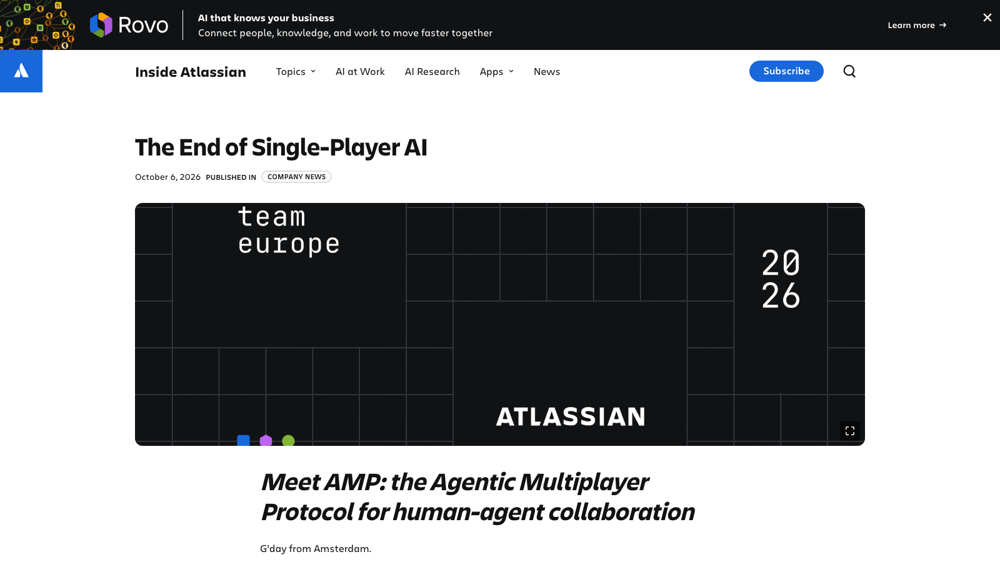

产品是什么
Atlassian AMP 是 Agentic Multiplayer Protocol，随 Team ’26 Europe 公布 rollout。它把 Agent 当作团队中的非人协作者，连接 Jira、Confluence、Loom、IDE、终…
这次变化
用户可以在 Confluence 文档中 @mention Agent、用 Loom 视频或光标/选区给出结构化 brief，也可以在 Jira 评论和 triage 流程中触发 Agent。Agent 读取被授权的 Teamwork Graph …
什么时候用
具体场景包括让 Agent 根据 Jira 评论自动分流、从 Confluence 选区生成验收条件、用 Loom 说明问题、在 Figma 或 IDE 旁边读取上下文、把本地 coding session 关联到对应工作项，以及让 HR 或 he…
限制与可用范围
Atlassian 官方文章宣布 AMP 开始 rollout，并列出 Jira、Confluence、Rovo、MCP、Artifacts 和 Agent Sessions 等相关平台入口。开放范围、地区、套餐、管理员开关、正式 API 文档、第…